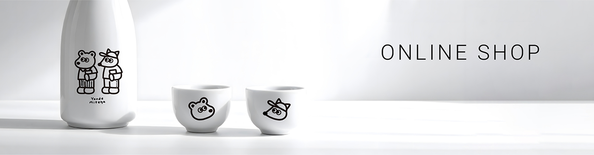

「読書は人生を豊かにする」と言う仮説を持つパーソナリティ2名が、本の内容を血肉化し活用していくために、お互いに読んだ本を紹介し、ゆるく雑談をしてインサイトを得るラジオ番組です。
毎週日曜日の17:00に新エピソードを配信します。
デザイナーかと経営者という、異なる領域のプロフェッショナルによる多角的な議論
表面的な要約ではなく、本の内容を深く咀嚼し、自分の思考に統合する
心地よい対話の間。読書や仕事のお供に最適な音の空間

2026.2.2
Podcast ウィークエンド 出展
Podcastの祭典に2026年春初出展いたします
SEND A MESSAGE
番組への感想やパーソナリティへの質問、番組と全く関係ない雑談など
リスナーの皆様からのお便りをお待ちしております！
お便りフォーム

SmartHR 代表取締役CEO
芹澤 雅人
2016年、SmartHR入社。2017年にVPoCに就任し、開発教育方針などエンジニアリングチームのOSとしてのマネジメントを担当する。2018年以降、CTOとしてプロダクト開発に携わり全責任をとる。2020年取締役CTOに就任し、2022年12月より現職。

株式会社Right Design 代表
小川 貴之
2013年多摩美術大学卒業学芸学部グラフィックデザイン学科卒業。博報堂、博報堂プロダクツ社員を経て独立。2018年に独自スタートアップを手がけるかたわら、FamileMartのプライベートブランドロゴマニュアルの企画パッケージ約100商品をデザイン。